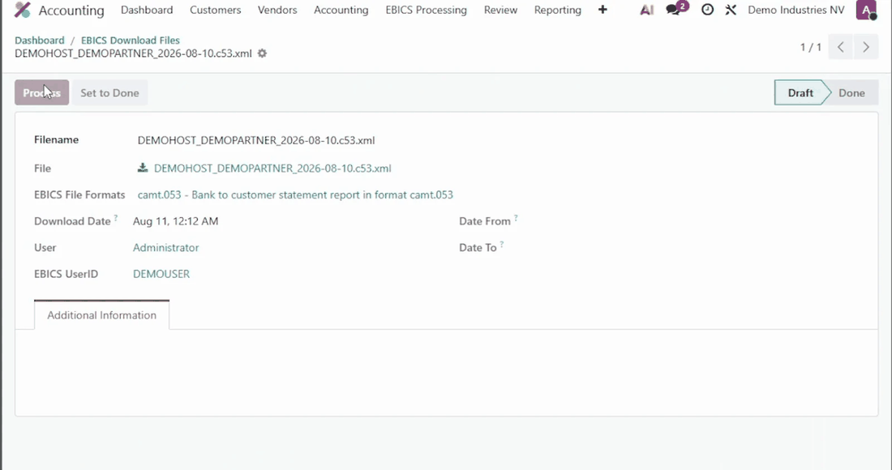

Your statements arrive without anyone asking for them.
This module adds a scheduled action that downloads and processes the EBICS files of every confirmed connection. This is what turns EBICS from a manual download into something your morning no longer depends on.

Each run creates a Batch Import Log. When a file cannot be processed, the log is set to error and records why; when every file is processed, it is set to done. From the log, Reprocess retries the files still in draft until the errors are cleared. A log can also be set to done by hand, for instance after a file was processed on its own or the movements were entered manually.
The scheduled action EBICS Batch Import is created inactive at installation, with a daily interval. Activate it in Settings > Technical > Automation > Scheduled Actions (developer mode), and adapt its interval if needed.
It calls the following method, on all confirmed connections:
model._batch_import()
To limit it to some connections, pass their ids:
model._batch_import(ebics_config_ids=[1, 3])
This module extends EBICS Banking Protocol (account_ebics), the EBICS implementation for Odoo developed and maintained by Noviat. Install it first: https://github.com/Noviat/account_ebics
What EBICS is and what it changes, in plain language, with screen recordings of the flow: https://www.noviat.com/ebics
Developed and maintained by Noviat, Odoo integrator in Belgium, specialised in accounting and finance since 2009. We configure the connection with your banks and support you through the first cycles.